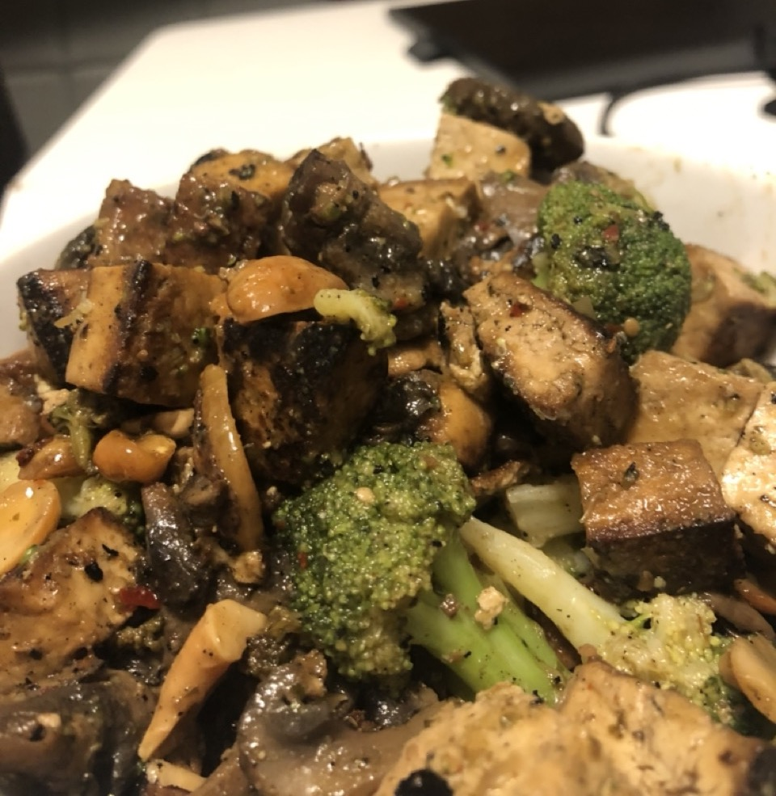

liam
hz
blog
art home school
Spicy Cashew Tofu

Ingredients
2 packages of extra firm tofu
1 package of mushrooms
1/4 cup of cashews
1/4 cup of soy sauce
2 teaspoons of sesame oil
2 tbsp of green chili sauce
Green Dragon from Trader Joe's
Or other Thai green chili sauce
1/2 teaspoon of
garlic powder
onion powder
chili flakes
paprika
black pepper
salt
Directions
Press the tofu. Wrap it in paper towel, place on a plate with a heavy pan on top to force out the moisture
Dice the tofu into 1 inch cubes
Split the cashews in half and slice the mushrooms
Oil the pan and fry tofu on high until golden brown and crispy, ~3 minutes
Add the cashews and mushrooms to the pan, let it all cook for 2 minutes
(Optional) add in broccoli florets
Add all of the spices
Add 1/4 cup of soy sauce and a 1/4 cup of water
Cook for a few minutes, until no liquid remains
Serve on rice, and top with chili sauce and sesame oil